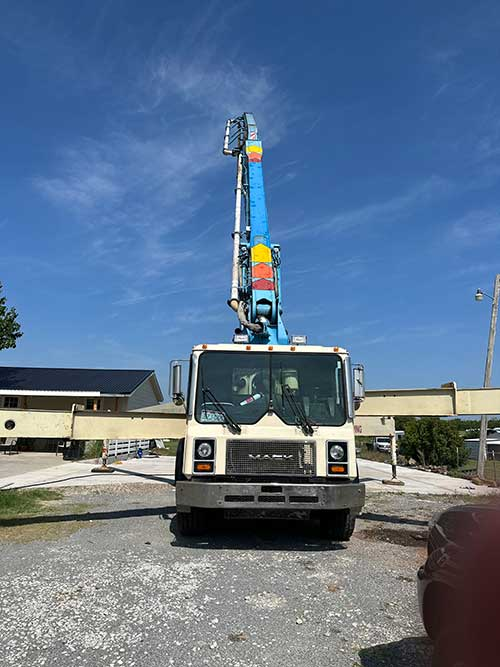

FARMERSVILLE, TEXAS · LOCAL PUMPING CREW
Concrete where
you need it.
Owner-operated boom pump service for pours across Farmersville and nearby communities. A dependable crew and the reach to make tough access easier.
BUILT AROUND YOUR POUR
Less hauling.
More progress.
Getting concrete into a tight or distant spot takes the right equipment and a clear plan. Our boom pump moves the pour to the work area so your team can focus on placing and finishing it.
See how pumping helps
WHY NEW STAR
A local operator.
A better working day.
When the pump shows up ready and the person running it knows the job, the pour can keep moving. New Star is family owned and operated, with a straightforward approach to every project.
Place concrete beyond the reach of a mixer truck.
Work directly with an owner-operator.
Based in Farmersville and serving surrounding areas.
FROM THE FIELD
Work in motion.


LET'S GET TO WORK
Have a pour coming up?
Tell us where you're working and what the job calls for.